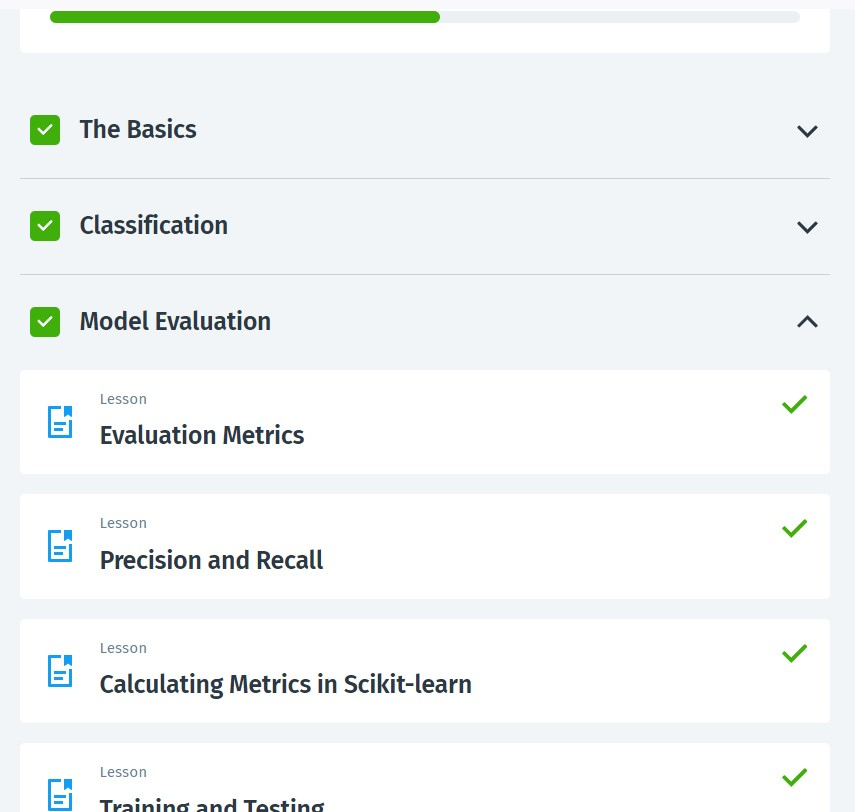

Machine Learning
In de laatste periode zijn we bezig geweest met Machine Learning. We volgden een cursus op Sololearn die een uitgebreide introductie bood tot dit vakgebied. De eerste module, genaamd "The Basics", behandelde fundamentele concepten zoals statistiek, data manipulatie met Python bibliotheken zoals Pandas en Numpy, en basisvisualisatie met Matplotlib. Hiermee legden we de basis voor het begrijpen van machine learning en de praktische toepassing ervan. In de tweede module, "Classification", concentreerden we ons op het concept van het classificeren van data in verschillende categorieën. We hebben gewerkt met lineaire modellen zoals logistische regressie en toegepaste praktische implementaties met behulp van de Scikit-learn bibliotheek. Dit stelde ons in staat om de basisprincipes van classificatiemodellen te begrijpen en toe te passen op echte datasets, zoals de borstkankerdataset. De laatste module, "Model Evaluation", richtte zich op het evalueren van de prestaties van machine learning modellen. We hebben verschillende evaluatiemetrics geleerd, zoals nauwkeurigheid, precisie en recall, en methoden voor modelvalidatie, zoals k-fold cross-validatie. Deze module voorzag ons van essentiële tools en technieken om de effectiviteit van onze modellen te beoordelen en te verbeteren. Elke module werd afgesloten met een quiz om de verworven kennis te testen, en we werden uitgedaagd met codeprojecten om de geleerde concepten toe te passen op praktische problemen. Deze cursus heeft ons voorbereid om complexe machine learning modellen te begrijpen, te bouwen en te evalueren voor een breed scala aan toepassingen. Aan het eind van de periode kregen we nog een schriftelijke toets, waarmee we informatica in 5vwo afsloten.
